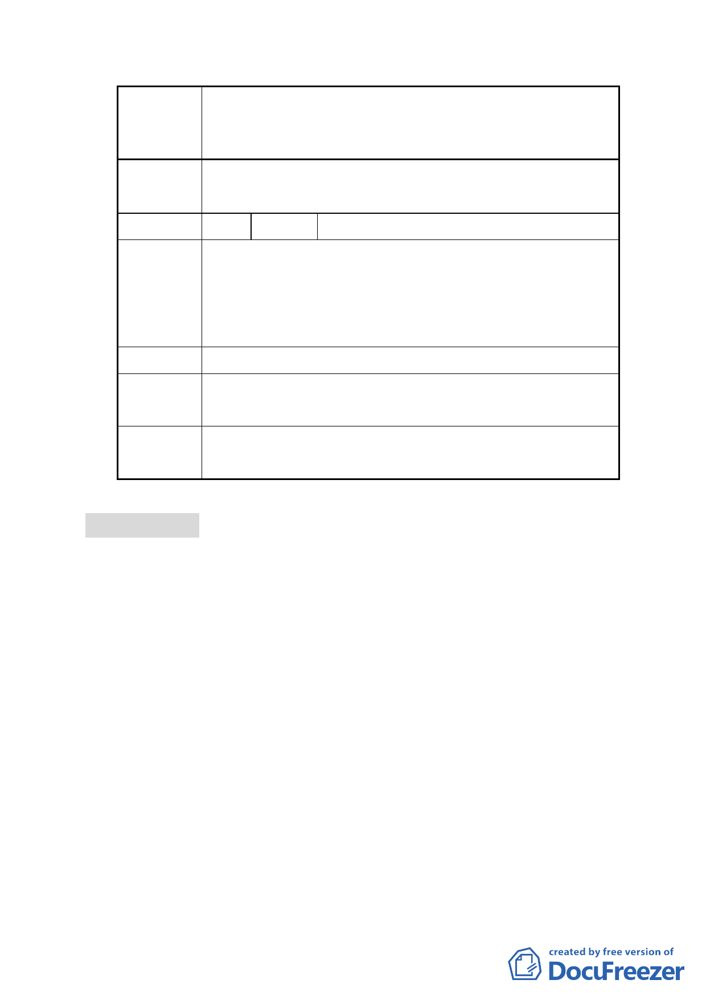

案名
委員會
決議
編號
變更臺北市士林區三玉段四小段 491 地號等 4 筆第三種
住宅區為綠地用地暨 491-2 地號等 4 筆道路用地為第三種
住宅區細部計畫案
錄案提供市府參考。
4 陳情人 梁景翔（資料現場發送）
陳情理由
本來社區內習慣通行士東路 2 巷，如果又開闢另一條路
出來，怕道路交口容易發生交通事故。如果計劃能夠通
過，讓社區多一個公園，交通跟公園都兼顧到了，故本
人支持本案。
建議辦法
市府回應 （無）
說明
委員會 錄案提供市府參考。
決議
肆、研議事項
案名：市府提送「研議如何妥善處理本市北投區中和里及秀山里
保護區現有合法建物之更新改建」研議案
說明：
一、本案係市府為解決本市北投區原陽管局所核發建築執照之既
存合法建築物座落土地，後經 59 年 7 月 4 日發布實施主要計
畫劃定為保護區，該等建物迄今多已老舊，然依保護區規定
更新改建困難，居民長期以來訴求變更保護區為第三種住宅
區，應如何協助進行更新，故先選擇其中北投區中和里及秀
山里作為檢討範圍，提出處理方案，先提本會進行研議，以
作為市府處理參考。
二、本案檢討範圍包括北投區中和里及秀山里共三個區域，土地
面積（含既有巷道）約 5.84 公頃，目前多為 2－4 層樓建築
- 14 -